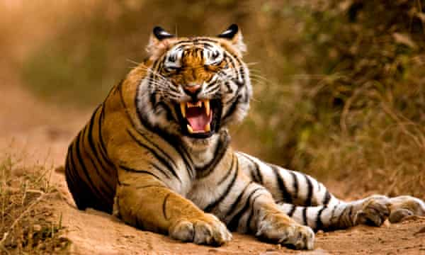
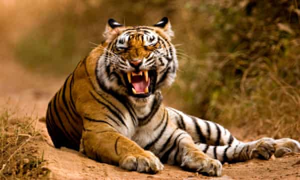
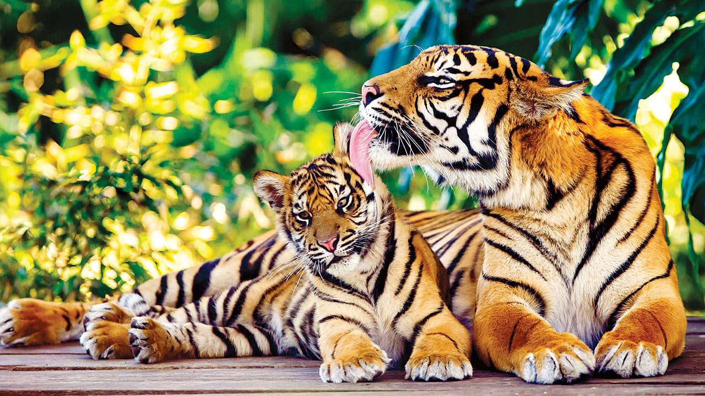
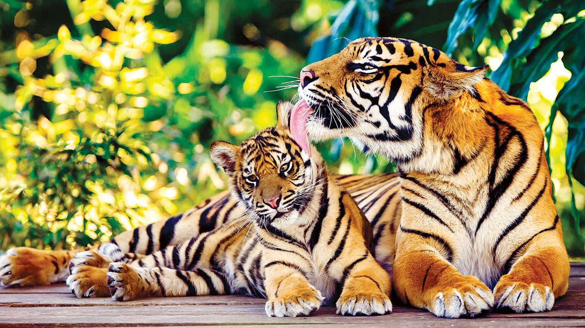

 

The tiger (Panthera tigris) is the largest extant cat species and a member of the genus Panthera. It is most recognisable for its dark vertical stripes on orange-brown fur with a lighter underside. It is an apex predator, primarily preying on ungulates such as deer and wild boar. It is territorial and generally a solitary but social predator, requiring large contiguous areas of habitat, which support its requirements for prey and rearing of its offspring. It featured prominently in ancient mythology and folklore and continues to be depicted in modern films and literature, appearing on many flags, coats of arms and as mascots for sporting teams. The tiger is the national animal of India, Bangladesh, Malaysia and South Korea.
Tiger cubs stay with their mother for about two years, before they become independent and leave their mother's home range to establish their own. The tiger once ranged widely from the Eastern Anatolia Region in the west to the Amur River basin, and in the south from the foothills of the Himalayas to Bali in the Sunda islands. Since the early 20th century, tiger populations have lost at least 93% of their historic range and have been extirpated in Western and Central Asia, from the islands of Java and Bali, and in large areas of Southeast and South Asia and China. Today's tiger range is fragmented, stretching from Siberian temperate forests to subtropical and tropical forests on the Indian subcontinent and Sumatra.The tiger is listed as endangered on the IUCN Red List. As of 2015, the global wild tiger population was estimated to number between 3,062 and 3,948 mature individuals, with most of the populations living in small pockets isolated from each other. India currently hosts the largest tiger population. Major reasons for population decline are habitat destruction, habitat fragmentation and poaching. Tigers are also victims of human–wildlife conflict, in particular in range countries with a high human population density. The tiger is among the most recognisable and popular of the world's charismatic megafauna.
The Middle English tigre and Old English tigras derive from Old French tigre, from Latin tigris. This was a borrowing of Classical Greek τίγρις 'tigris', a foreign borrowing of unknown origin meaning 'tiger' as well as the river Tigris.
The generic name Panthera is derived from the Latin word panthera, and the Ancient Greek word πάνθηρ 'panther'.The Sanskrit word पाण्डर pāṇḍ-ara means 'pale yellow, whitish, white'.
The tiger's closest living relatives were previously thought to be the Panthera species lion, leopard and jaguar. Results of genetic analysis indicate that about 2.88 million years ago, the tiger and the snow leopard lineages diverged from the other Panthera species, and that both may be more closely related to each other than to the lion, leopard and jaguar.
Results of a phylogeographic study indicate that all living tigers had a common ancestor 72,000–108,000 years ago.[24] The potential tiger range during the late Pleistocene and Holocene was predicted applying ecological niche modelling based on more than 500 tiger locality records combined with bioclimatic data.